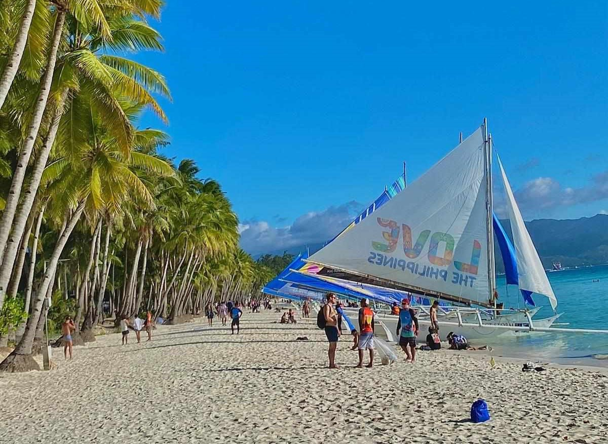
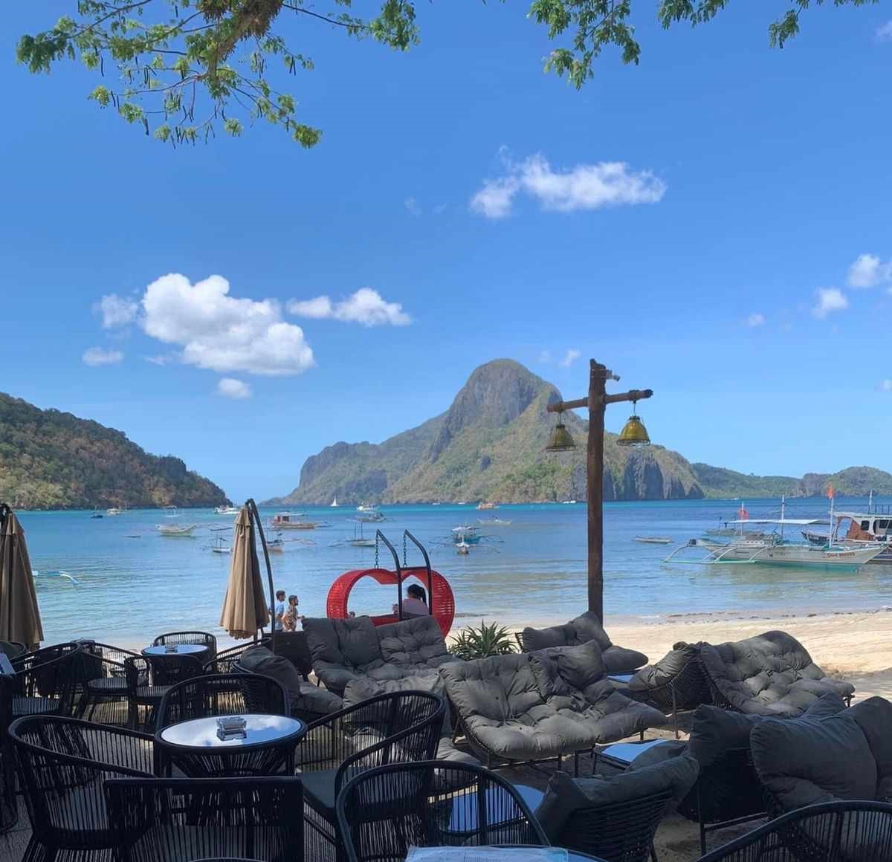
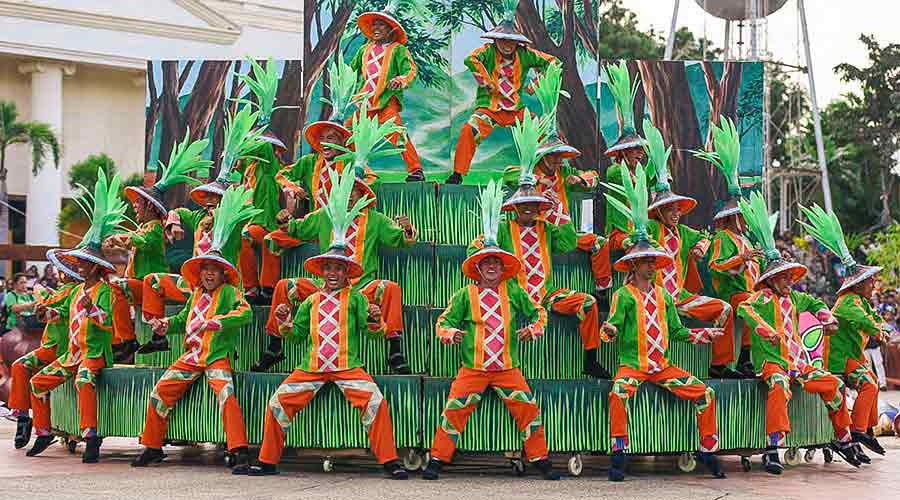

Explore The Amazing
Book Hotel Now!!!
×




B O R A C A Y
Boracay, one of the top Islands in the Philippines,
- is popular for its beaches and blessed with a long stretch of powdery white sand, crystal clear and azure waters, and a stunning sunset.
It is one of the most popular vacation destinations in the Philippines, offering a vibrant nightlife and a wide array of water activities.
CHOCOLATE HILLS
Chocolate Hills is Located in Bohol Province,
Chocolate Hills are are a geological formation.
There are at least 1,260 hills (and maybe more) spread over an area of more than 50 square kilometres (20 sq mi). They are covered in green grass that turns brown (like chocolate) during the dry season, hence the name.
These hills turn chocolate brown in the dry season, hence the name, and provide a picturesque landscape that is unique in the world.





PALAWAN
Palawan is long and narrow and trends northeast-southwest between the South China and Sulu seas. It has a maximum width of 24 miles (39 km) and a mountainous backbone that runs its entire 270-mile (434-km) length, with Mount Mantalingajan (6,840 feet [2,085 metres]) in the south as its highest peak.
MAYON VOLCANO
Mayon, also known as mayon volcano and mount mayon is an active stratovolcano in the province of Albay in Bicol, Philippines.
A popular tourist spot renowned for its perfect cone, because of its symmetric conical shape, an is regarded as answered as sacred in Philippines Myhology


V I G A N
- vigan is a city in the Philippines on the west coast of Luzon Island. its for known for each preserves spanish colonial and Asian architecture.
Calle Crisologo dominates the Mestizo District, with its cobblestone streets, malecon, horse-shown carriage and rustic mansion.
CAMIGUIN ISLAND
Camiguin, also known as the island Born of Firem is home to Seven Volcanoes.


INTRAMUROS
Intramuros, or the 'Walled City', is one of the oldest districts of Manila, built on the south bank of the Pasig River around 1571. It was built by the Spaniards – more specifically by Miguel Lopez de Legaspi – and is bound on all sides by moats and thick, high walls, with some over 6 meters high.
BANAUE RICE TERRACES
The Banaue Rice Terraces are terraces that were carved into the mountains of Banaue, Ifugao, in the Philippines, by the ancestors of the Igorot people. The terraces are occasionally called the "Eighth Wonder of the World". It is commonly thought that the terraces were built with minimal equipment, largely by hand.


MOUNT APO
Mount Apo is the highest mountain peak in the Philippines, with an elevation of 2,954 meters above sea level. A large solfataric, dormant stratovolcano, it is part of the Apo-Talomo Mountain Range of Mindanao island.
Developers and Members
Name: John Paul De Vera
Age: 20
Emails: johnpauldevera1014@gmail.com
Name: Cashmier Bautista
Age: 19
Emails: cashmierbautista07@gmail.com

Name: Joshua San Juan
Age: 21
Emails: joshuasanjuangaming@gmail.com
Name: Angelo Tabangcura
Age: ???
Emails: ???

Name: Jay Ar Abid
Age: 21
Emails: abidjay05@gmail.com
Name: Jay Ar Abid
Age: 21
Emails: abidjay05@gmail.com

Name: David John Salvador
Age: 21
Emails: djohnsalvador23@gmail.com
Name: David John Salvador
Age: 21
Emails: djohnsalvador23@gmail.com

Name: John Carlo Vicente
Age: 23
Emails: jancarlovicente62@gmail.com